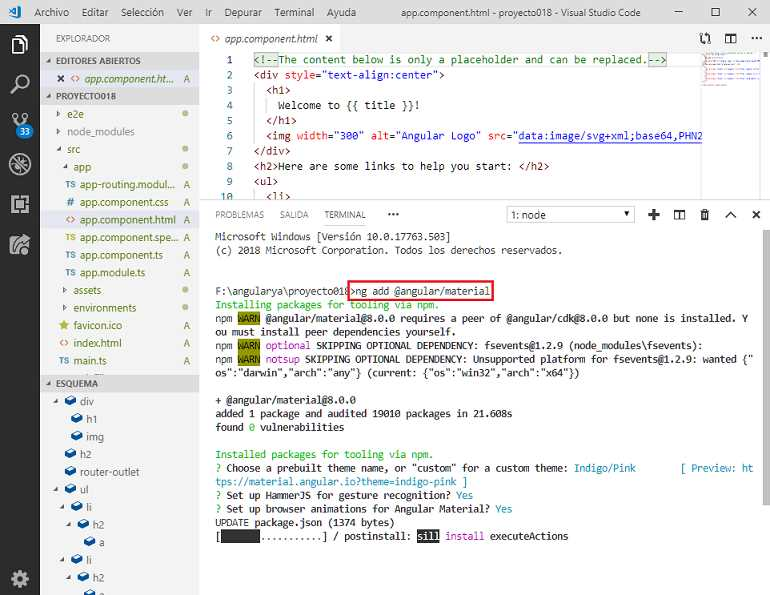
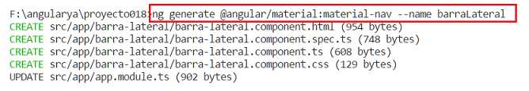
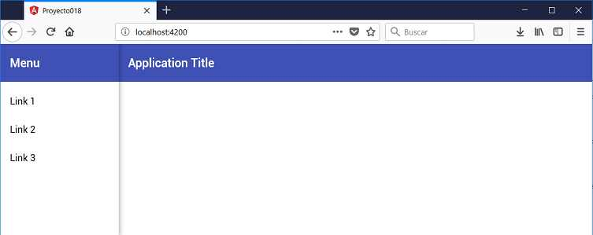
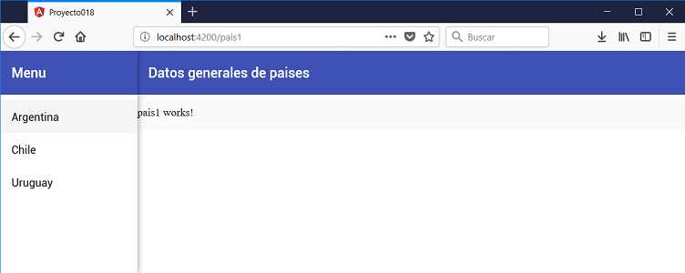
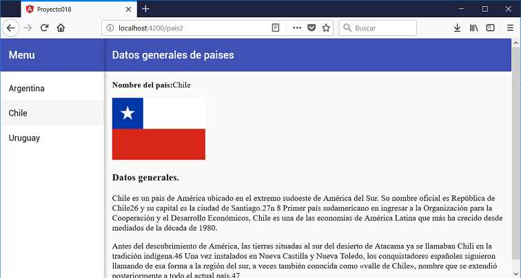

Angular material es un conjunto de componentes visuales que nos permiten desarrollar interfaces de usuario consistentes.
Este conjunto de componentes los desarrolla el mismo equipo de Angular y podemos visitar sus avances en el sitio material.angular.io/
Disponemos de un gran conjunto de componentes:
Crearemos una aplicación que disponga un menú lateral a la izquierda con los nombres de tres países. Mediante el concepto que vimos de Router mostraremos en distintas componentes las informaciones de dichos países.
Crearemos primero el proyecto (es importante la opción 'routing' ya que la aplicación la requiere, si no disponemos dicho valor elegir que queremos utilizar routing cuando nos consulte Angular CLI)
ng new proyecto018 --routing
Procedemos a instalar todas las dependencias de Angular Material ayudados por Angular CLI mediante el comando 'add' (se nos pide elegir el tema y algunos otros datos, podemos dejar los valores por defecto presionando la tecla 'Enter'):
ng add @angular/material
Luego de esto ya tenemos en la carpeta node_modules/angular/material todas las componentes de Angular Material para ser utilizadas en nuestro proyecto.
Crearemos la barra lateral que dispondrá los enlaces:
ng generate @angular/material:material-nav --name barraLateral
Se crea una componente llamada 'BarraLateralComponent' con los 4 archivos correspondientes y la modificación del archivo 'app.module.ts':
Modificamos ahora el archivo 'app.component.html' donde creamos una etiqueta de la componente que acabamos de crear en el paso anterior:
app.component.html
<app-barra-lateral></app-barra-lateral>
Si en este momento ejecutamos la aplicación ya podemos ver la barra de navegación lateral:
ng serve -o
Hasta ahora solo hemos empleado Angular CLI para llegar a este lugar, es decir crear el proyecto y la componente del menú lateral.
Creamos las tres componentes pais1, pais2 y pais3 que tienen por objetivo mostrar datos de paises:
ng generate component pais1
ng generate component pais2
ng generate component pais3
Podemos abrir el archivo 'app.module.ts' y ver que se han importado las tres componentes que acabamos de crear:
import { BrowserModule } from '@angular/platform-browser';
import { NgModule } from '@angular/core';
import { AppRoutingModule } from './app-routing.module';
import { AppComponent } from './app.component';
import { BrowserAnimationsModule } from '@angular/platform-browser/animations';
import { BarraLateralComponent } from './barra-lateral/barra-lateral.component';
import { LayoutModule } from '@angular/cdk/layout';
import { MatToolbarModule, MatButtonModule, MatSidenavModule, MatIconModule, MatListModule } from '@angular/material';
import { Pais1Component } from './pais1/pais1.component';
import { Pais2Component } from './pais2/pais2.component';
import { Pais3Component } from './pais3/pais3.component';
@NgModule({
declarations: [
AppComponent,
BarraLateralComponent,
Pais1Component,
Pais2Component,
Pais3Component
],
imports: [
BrowserModule,
AppRoutingModule,
BrowserAnimationsModule,
LayoutModule,
MatToolbarModule,
MatButtonModule,
MatSidenavModule,
MatIconModule,
MatListModule
],
providers: [],
bootstrap: [AppComponent]
})
export class AppModule { }
Debemos ahora modificar el archivo 'app-routing.module.ts' con las tres rutas:
import { NgModule } from '@angular/core';
import { Routes, RouterModule } from '@angular/router';
import { Pais1Component } from './pais1/pais1.component';
import { Pais2Component } from './pais2/pais2.component';
import { Pais3Component } from './pais3/pais3.component';
const routes: Routes = [
{
path:'pais1',
component:Pais1Component
},
{
path:'pais2',
component:Pais2Component
},
{
path:'pais3',
component:Pais3Component
}
];
@NgModule({
imports: [RouterModule.forRoot(routes)],
exports: [RouterModule]
})
export class AppRoutingModule { }
Mediante la etiqueta 'router-outlet' indicamos el lugar que debe mostrar la componente especificada por la ruta configurada en el archivo 'app-routing.module.ts', para esto abrimos el archivo 'barra-lateral.component.html' y agregaremos la etiqueta 'router-outlet':
barra-lateral.component.html
<mat-sidenav-container class="sidenav-container">
<mat-sidenav #drawer class="sidenav" fixedInViewport
[attr.role]="(isHandset$ | async) ? 'dialog' : 'navigation'"
[mode]="(isHandset$ | async) ? 'over' : 'side'"
[opened]="(isHandset$ | async) === false">
<mat-toolbar>Menu</mat-toolbar>
<mat-nav-list>
<a mat-list-item routerLink="/pais1">Argentina</a>
<a mat-list-item routerLink="/pais2">Chile</a>
<a mat-list-item routerLink="/pais3">Uruguay</a>
</mat-nav-list>
</mat-sidenav>
<mat-sidenav-content>
<mat-toolbar color="primary">
<button
type="button"
aria-label="Toggle sidenav"
mat-icon-button
(click)="drawer.toggle()"
*ngIf="isHandset$ | async">
<mat-icon aria-label="Side nav toggle icon">menu</mat-icon>
</button>
<span>Datos generales de paises</span>
</mat-toolbar>
<!-- Add Content Here -->
<router-outlet></router-outlet>
</mat-sidenav-content>
</mat-sidenav-container>
Hemos modificado del código generado los hipervínculos a las distintas rutas:
<a mat-list-item routerLink="/pais1">Argentina</a>
<a mat-list-item routerLink="/pais2">Chile</a>
<a mat-list-item routerLink="/pais3">Uruguay</a>
Y también es fundamental agregar la etiqueta 'router-outlet' para indicar donde se muestran las componentes.
Si ejecutamos ahora la aplicación los tres hipervínculos activan la componente respectiva donde se mostrará información referente a cada pais:
Solo nos queda componer los contenidos de las componentes 'Pais1Component', 'Pais2Component' y 'Pais3Component'.
pais1.component.html
<div class="datos">
<p><strong>Nombre del país:</strong>Argentina</p>
<p>
<img src="assets/imagenes/argentina.png">
</p>
<h3>Datos generales.</h3>
<p>Argentina, llamada oficialmente República Argentina,n 1? es un país soberano de América del Sur,
ubicado en el extremo sur y sudeste de dicho subcontinente. Adopta la forma de gobierno republicana,
democrática, representativa y federal.</p>
<p>La Argentina está organizada como un Estado federal descentralizado, integrado desde 1994 por un
Estado nacional y 24 estados autogobernados,11?12? siendo estos sus 23 provincias sumada la ciudad
autónoma de Buenos Aires designada como Capital Federal del país.
Cada estado tiene autonomía política, constitución, bandera y cuerpo de seguridad propios.
Las 23 provincias mantienen todos los poderes no delegados al Estado nacional y
garantizan la autonomía de sus municipios.13?14?</p>
</div>
pais2.component.html
<div class="datos">
<p><strong>Nombre del país:</strong>Chile</p>
<p>
<img src="assets/imagenes/chile.png">
</p>
<h3>Datos generales.</h3>
<p>Chile es un país de América ubicado en el extremo sudoeste de América del Sur.
Su nombre oficial es República de Chile26? y su capital es la ciudad de Santiago.27?n 8?
Primer país sudamericano en ingresar a la Organización para la Cooperación y el
Desarrollo Económicos, Chile es una de las economías de América Latina que más ha
crecido desde mediados de la década de 1980.</p>
<p>Antes del descubrimiento de América, las tierras situadas al sur del desierto de Atacama ya
se llamaban Chili en la tradición indígena.46? Una vez instalados en Nueva Castilla y
Nueva Toledo, los conquistadores españoles siguieron llamando de esa forma a la
región del sur, a veces también conocida como «valle de Chile», nombre que se extendió
posteriormente a todo el actual país.47?</p>
</div>
pais3.component.html
<div class="datos">
<p><strong>Nombre del país:</strong>Uruguay</p>
<p>
<img src="assets/imagenes/uruguay.png">
</p>
<h3>Datos generales.</h3>
<p>Uruguay, oficialmente República Oriental del Uruguay, es un país de América del Sur,
situado en la parte oriental del Cono Sur americano. Limita al noreste con Brasil —estado
de Río Grande del Sur—, al oeste con Argentina —provincias de Entre Ríos y Corrientes— y
tiene costas en el océano Atlántico al sureste y sobre el Río de la Plata hacia el sur.
Abarca 176?215 km² y es el segundo país más pequeño de Sudamérica, después de Surinam.1?
Según los datos del último censo del INE en 2011, la población de Uruguay es de 3.290.454
habitantes, por lo que figura en la décima posición entre los países sudamericanos.Uruguay,
oficialmente República Oriental del Uruguay, es un país de América del Sur, situado en la
parte oriental del Cono Sur americano. Limita al noreste con Brasil
—estado de Río Grande del Sur—, al oeste con Argentina —provincias de Entre Ríos y Corrientes— y
tiene costas en el océano Atlántico al sureste y sobre el Río de la Plata hacia el sur.
Abarca 176?215 km² y es el segundo país más pequeño de Sudamérica, después de Surinam.1?
Según los datos del último censo del INE en 2011, la población de Uruguay
es de 3.290.454 habitantes, por lo que figura en la décima posición entre los países
sudamericanos.</p>
</div>
Lo nuevo es que hemos agregado las tres imágenes de las banderas en una carpeta llamada imagenes que se debe crear dentro de la carpeta 'assets':
<img src="assets/imagenes/uruguay.png">
Si ejecutamos nuevamente la aplicación tenemos como resultado:
Podemos probar esta aplicación en la web aquí.
import { NgModule } from '@angular/core';
import { Routes, RouterModule } from '@angular/router';
import { Pais1Component } from './pais1/pais1.component';
import { Pais2Component } from './pais2/pais2.component';
import { Pais3Component } from './pais3/pais3.component';
const routes: Routes = [
{
path:'',
component:Pais2Component
},
{
path:'pais1',
component:Pais1Component
},
{
path:'pais2',
component:Pais2Component
},
{
path:'pais3',
component:Pais3Component
}
];
@NgModule({
imports: [RouterModule.forRoot(routes)],
exports: [RouterModule]
})
export class AppRoutingModule { }
Agregamos una nueva ruta para el path con un string vacío indicando en la propiedad component cual es la que se debe mostrar:
const routes: Routes = [
{
path:'',
component:Pais2Component
},